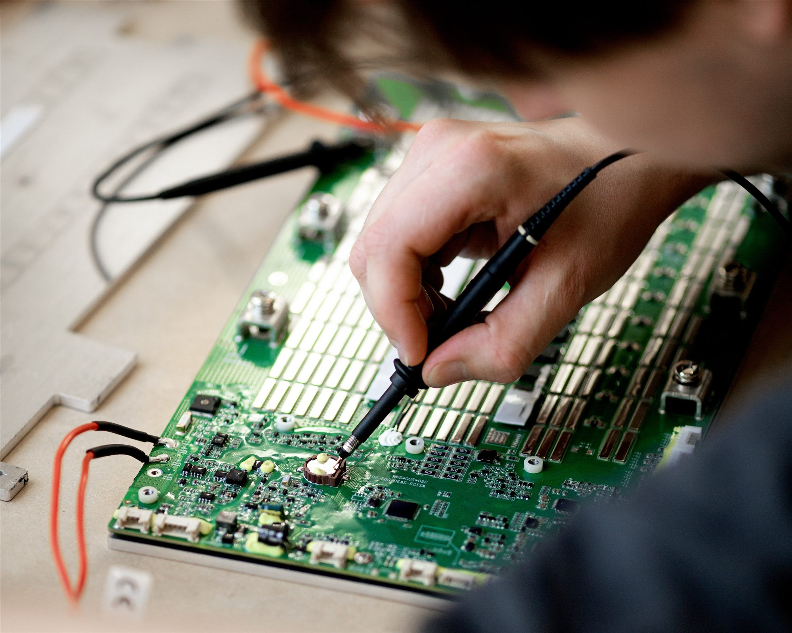

From technician to engineer role
Where an engineer typically designs and develops systems, and a technician builds, tests, and keeps them running, Peter operates in the exciting overlap between the two. As an Electronics Engineer, he works with development, troubleshooting, and documentation, making sure the electronic solutions align with software, mechanics, and customer requirements. In this way, he complements his colleagues in mechanics, software, and design, ensuring that electronics are not an afterthought but an integral part of the project.
Electronics early in the process
When WS Technicals embarks on developing a new battery, Peter's expertise comes into play early. Already at the specification stage, he translates customer requirements into concrete electrical demands: voltages, current levels, safety functions, and machine communication between battery and other devices, e.g. chargers.
In the concept phase, his perspective becomes crucial for making sure the design can actually be realized. Will the circuit boards be cooled effectively? Is there space for the necessary sensors? How should the relays be integrated? If electronics are not considered from the beginning, the result may look good on paper, but fail in practice.
Before the first prototypes are built, Peter plays a key role in configuring the Battery Management System (BMS). This is where the limits for voltage, temperature protection, and current profiles are defined.
"Configuring a battery system is like setting up an aircraft cockpit: most buttons and functions are the same across planes, but each model requires a specific sequence, precise adjustments, and correct interaction between systems before it can take off safely."Peter, Electronics Engineer
Wiring diagrams, pinouts, and relays
A central part of Peter's work is creating and reviewing wiring diagrams, the technical drawings that map out all the connections in a battery. In internal "battery reviews," he checks that pinouts match between software and hardware. For this, he often uses the program BMS Creator with a test setup to make sure the functions are tested before physical implementation.
Relay and contactor selection represents another area where Peter's technical background adds value. The DC-rated switches control battery connectivity, but the "right" component depends on multiple factors: the electrical load characteristics, budget considerations, expected lifespan, and compatibility with existing equipment. Peter helps customers navigate these tradeoffs to find optimal solutions for their specific needs.
This is why Peter works closely with his WS Technicals colleagues: mechanical engineers contribute knowledge about load requirements, design technicians about layout and cooling, and fellow electronics engineers about precise electrical specifications.
"What might look like a simple decision is, in reality, the result of close interdisciplinary collaboration."Peter, Electronics Engineer

When standard solutions don't work
Peter's daily work also brings challenges where standard solutions simply won't do. He recalls a customer who had a compact tool carrier built with a custom battery. The customer powered the battery through a connector, a procedure that disabled the automatic shutoff function. The risk was that the battery could be completely drained (undervoltage) and damage the cells beyond a usable state. Since the customer could not change their procedure, Peter had to find another way.
The solution was a single-shot relay that acts as a one-time electrical switch. This allowed the system to preserve the automatic shutoff function regardless of how the customer powered it on.
"It's not a standard solution, and it takes some experience to translate a software problem into a hardware solution."Peter, Electronics Engineer
Bridge-builder and troubleshooter
Beyond his daily development work, Peter serves as a key link between WS Technicals and Lithium Balance, the company that develops the BMS. He translates practical experiences from customers and projects into technical questions and feedback for the developers, ensuring that theory and reality stay aligned.
His role might best be described as a combination of bridge-builder, advisor, and troubleshooter. A bridge-builder when translating between departments and external partners. An advisor when helping colleagues choose the right components. And a troubleshooter when locating and fixing complex failures in the field.
Future batteries, same electronic challenges
Looking to the future, Peter points out that the next big development in the industry is chemistry. The world's largest battery producer has begun investing in sodium-ion batteries, which are safer and allow faster charging, though they come with lower energy capacity compared to lithium-ion.
For Peter, however, this doesn't fundamentally change his work.
"Whether the battery is lithium or sodium, it still needs to be monitored, tested, and managed by a BMS. The processes are the same."Peter, Electronics Engineer